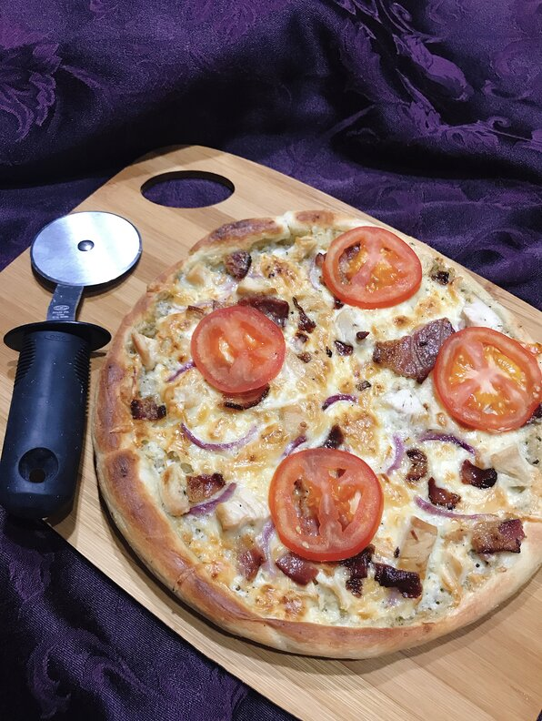

Pizza

Pizza
(Italian: [ˈpittsa], Neapolitan: [ˈpittsə]) is an Italian dish consisting of a usually round, flattened base of leavened wheat-based dough topped with tomatoes, cheese, and often various other ingredients (such as anchovies, mushrooms, onions, olives, pineapple, meat, etc.), which is then baked at a high temperature, traditionally in a wood-fired oven.[1] A small pizza is sometimes called a pizzetta. A person who makes pizza is known as a pizzaiolo.
Ingridients
- 4 slices bacon
- 2 teaspoons vegetable oil
- 1 (10 ounce) container refrigerated pizza crust
- 1 tablespoon dry ranch seasoning, divided
- ⅓ cup ranch dressing
- 6 ounces shredded mozzarella cheese
- ⅓ cup cubed, cooked chicken
- ⅛ cup sliced red onion
- 1 small tomato, sliced
- 1 tablespoon butter
- Preheat the oven to 375 degrees F (190 degrees C).
- Cook bacon in a large skillet and over medium-high heat, turning occasionally, until evenly browned, about 10 minutes. Drain bacon on paper towels and cool.
- Pour oil into a 12-inch cast iron skillet. Brush oil all over the interior of the skillet. Place dough into the skillet and shape into a pizza, forming a crust at the edge. Prick dough all over with a fork.
- Bake in the preheated oven for 5 minutes. Remove from oven and reshape dough if necessary. Sprinkle the top of the dough with 2 teaspoons ranch seasoning. Spread ranch dressing on top.
- Sprinkle shredded mozzarella, chicken, and red onion over pizza crust. Crumble cooled bacon on top.
- Bake in the preheated oven until cheese is melted and top is browned, about 20 minutes.
- Remove pizza from oven and top with tomato slices. Melt butter and mix in the remaining dry ranch seasoning. Brush crust with butter-ranch mixture.
- Set an oven rack about 6 inches from the heat source and preheat the oven's broiler.
- Broil pizza until cheese is golden brown, 2 to 3 minutes, being careful not to burn.